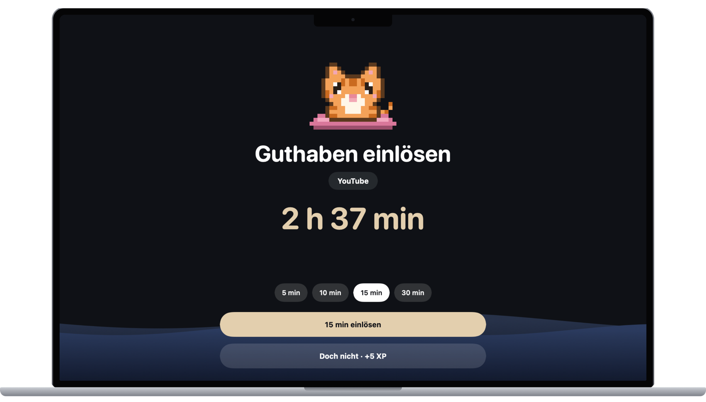

Guthaben
Zeit, die du dir verdienst
Jeder Tag beginnt mit einem kleinen Startbudget. Mehr Zeit für gesperrte Apps verdienst du dir mit dem, was dir guttut:
- Fokus-Sessions
- Habits und erledigte Aufgaben
- Bewegung aus Apple Health oder Health Connect
- Zeit in Apps, die du als produktiv festlegst
Öffnest du eine gesperrte App, löst du Guthaben ein und wählst, wie lange sie offen bleibt. Sperrst du früher, bekommst du den Rest zurück. Was übrig bleibt, kann in den nächsten Tag wandern.